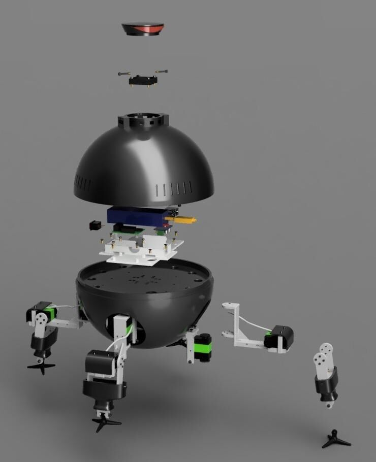
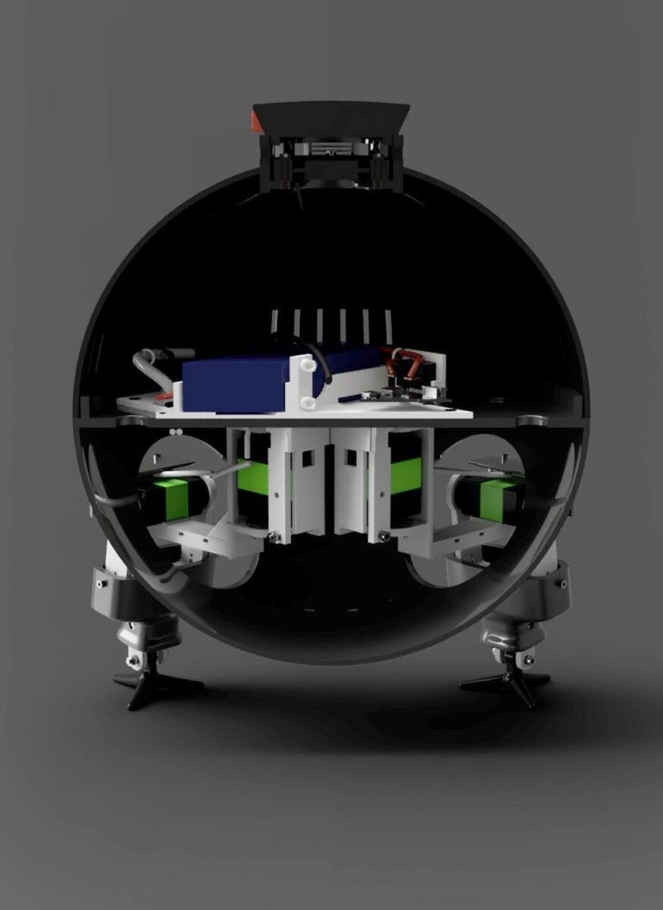
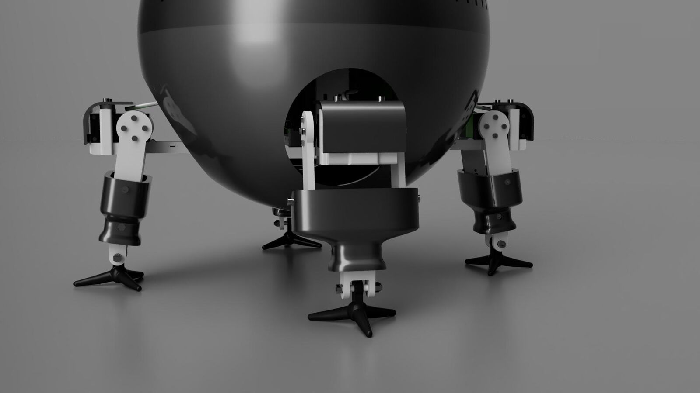
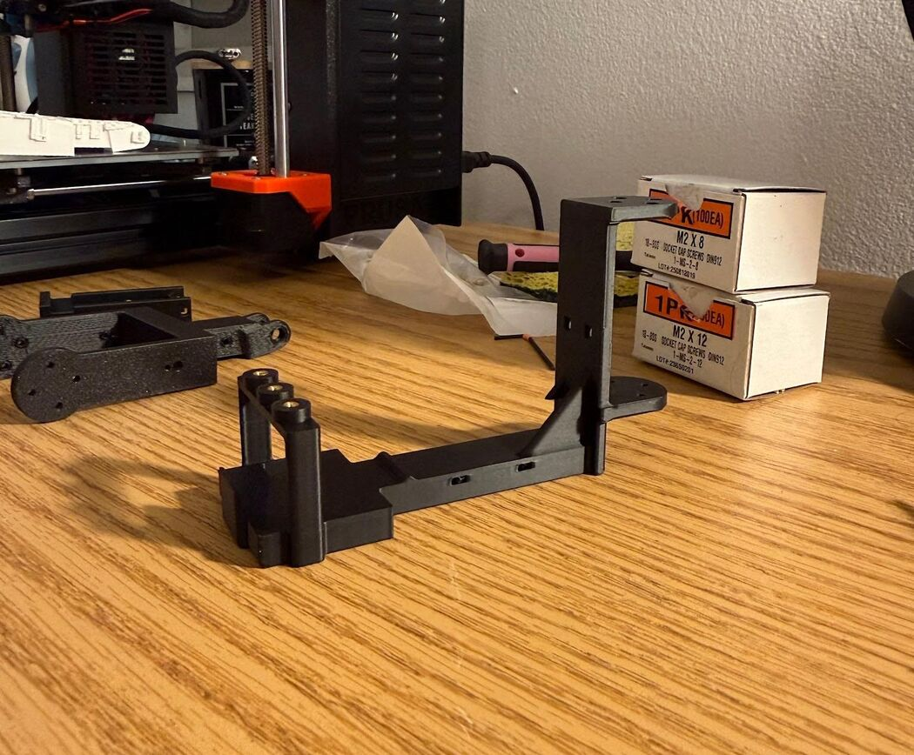
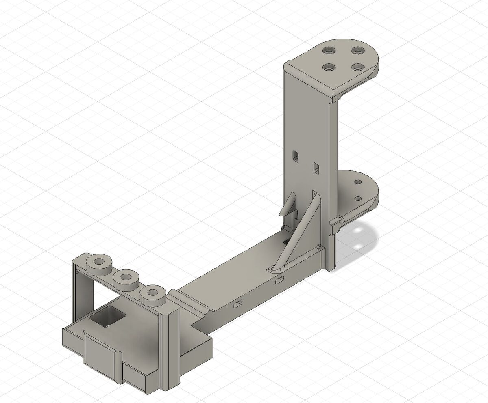

Omnidroid
The brief was to build a robot that looks organic and walks. The challenge is doing that on a budget: eight servos at most, a single-board computer, a battery, and around $100–150 in parts. Every leg design is a trade between how natural the motion looks and how few motors it can use. The shell and textures are 3D printed, and I'm working on a sensor pod that rises from the body and retracts flush.




